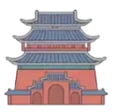
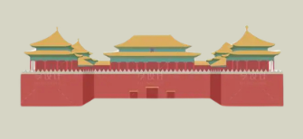
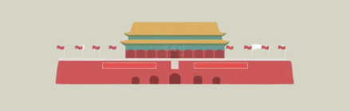
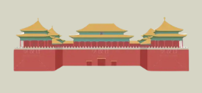
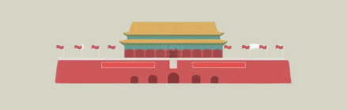
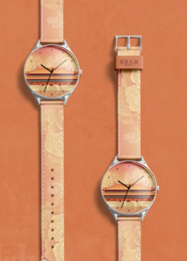
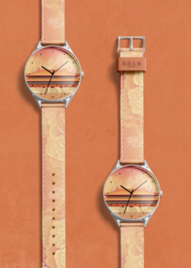

钟鼓楼 (The Bell and Drum Towers)
轴线关系：北端起点 (The Northern Terminus)
建筑身份：古都的时间总控中心。位于中轴线的最北端，前楼后鼓。它们曾在七百年的时光里以“暮鼓晨钟”控制着整座城市的作息脉搏，是古都秩序的收束点。
故宫 (The Forbidden City)
轴线关系：核心高潮 (The Sovereign Core)
建筑身份：世界上最大的皇宫建筑群。中轴线在此达到极致的辉煌。轴线笔直穿过太和殿的龙椅，所有的建筑都以此为中心左右严格对称，彰显着“皇权至上”的统领地位。

天安门 (Tiananmen)
轴线关系：皇城正门 (The Imperial Portal)
建筑身份：颁布诏令与举行大典的政治舞台。连接皇宫与民间的重要枢纽。它坐落在中轴线的黄金分割点上，承载着国家最高的礼仪威严，是通往权力中心的宏大门户。
永定门 (Yongding Gate)
轴线关系：南端起点 (The Southern Origin)
建筑身份：北京外城正南门。中轴线南行的起始标志，寓意“永远安定”。它如同一枚巨大的句点，确立了中轴线长达7.8公里的壮阔尺度，由此北望，秩序井然。


 



 
